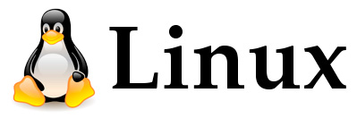

Розробка Linux

У 1981 у Лео, дідусь Лінуса, математик, познайомив онука з ЕОМ «Commodore VIC-20», що він її використовував для математичних обчислень. Лінус зацікавився програмуванням і прочитав керівництва до машини. Потім він почав читати комп'ютерні журнали і писати власні програми, спочатку на BASIC, а потім на асемблері. Зі шкільних років Лінус отримував стипендії за успіхи в математиці. Перша куплена ним ЕОМ — «Sinclair QL», тоді коштувала майже 2000 доларів США. Після закінчення школи Лінус вступив в Університет Гельсінкі на курс інформатики. Навчання було перервано річною службою в армії. Значною подією в житті Торвальдса було прочитання ним книги Ендрю Таненбаума «Операційні системи: розробка та реалізація» ('Operating Systems: Design and Implementation','ISBN 0-13-638677-6'). У книзі на прикладі написаної Таненбаум ОС «Minix», представлена структура систем сімейства UNIX. Лінус дуже зацікавився прочитаним. Пізніше він купив новий комп'ютер на базі 386-го процесора і встановив «Minix». Виявивши недоліки в системі, він почав писати власний емулятор терміналу, в якому реалізував перемикання завдань. Потім Лінус додавав в програму все нові і нові функції, завдяки чому вона незабаром стала набувати риси повноцінної операційної системи. 17 вересня 1991 а Лінус виклав сирцевий код програми (версії 0.01) для загальнодоступного завантаження. Система відразу ж викликала великий інтерес. Сотні, потім тисячі програмістів стали цікавитися системою (директорію з програмою, за відсутністю кращих варіантів, назвали «Linux») і працювати над її поліпшенням і доповненням. Вона поширювалася і до цього дня поширюється на умовах суспільної ліцензії GNU-GPL. Автор «Minix», професор Ендрю Таненбаум, несподівано виступив з різкою критикою дизайну системи: «Я як і раніше вважаю, що створювати монолітне ядро в 1991 році — фундаментальна помилка. Скажіть спасибі, що ви не мій студент: за такий дизайн я б не поставив високої оцінки :-)»(з листа до Лінуса Торвальдса). Свій пост Таненбаум назвав «Лінукс застарів». Крім монолітного ядра, Таненбаум критикував Linux за відсутність переносимості. Таненбаум пророкував, що процесори 80x86 в недалекому майбутньому зникнуть, поступившись місцем архітектурі RISC. Критика сильно зачепила Торвальдса. Таненбаум був знаменитим професором, і його думка мала значення. У даному питанні, проте, він помилявся. Лінус Торвальдс наполягав на своїй правоті. Відкритість ядра, написаного Лінусом, дала можливість використовувати його разом з напрацюваннями (компіляторами GCC, базовими утилітами ОС) GNU, проекту вільного варіанту системи UNIX, що існував з 1983 року (вся ця система часто називається «Linux», проте правильніше було б називати її «GNU/Linux»). Популярність системи зростала, і пізніше про неї заговорили журналісти в усьому світі. «Лінукс» і Лінус стали відомі. В даний час лише близько двох відсотків системного ядра «Linux» написано самим Торвальдсом, але за ним залишається рішення про внесення змін до офіційної гілки ядра. Торвальдс володіє товарним знаком «Linux» і стежить за його використанням за некомерційну організацію «Linux International» і за допомогою користувачів «Linux» у всьому світі.